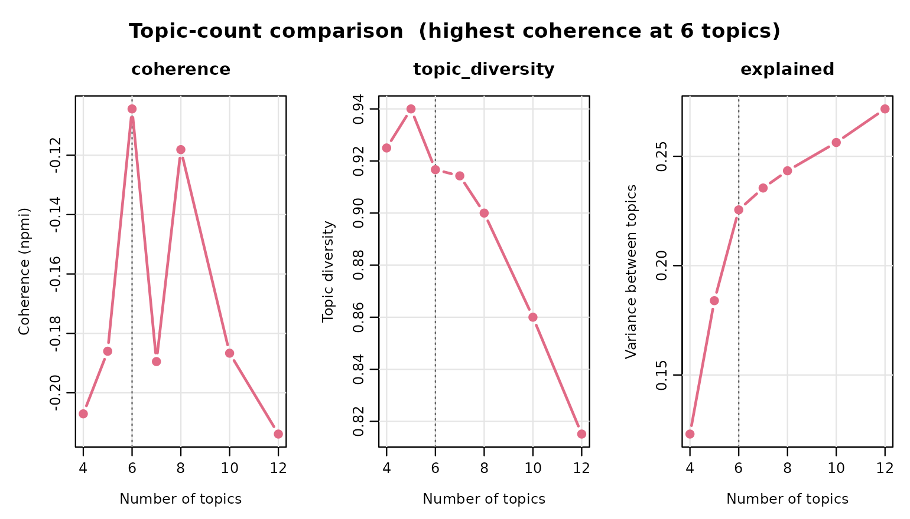
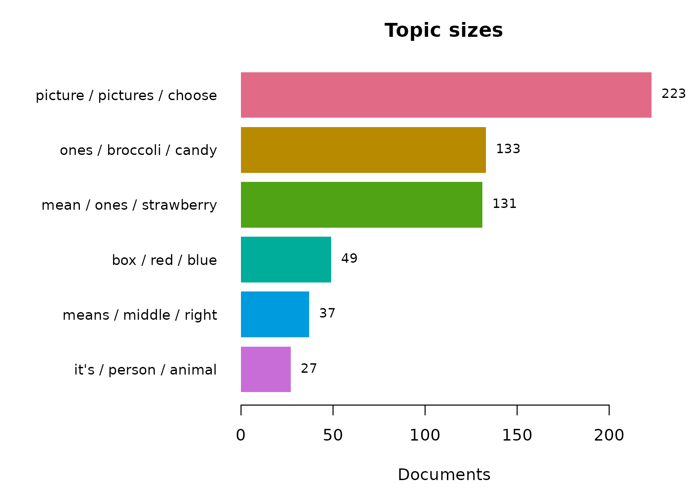
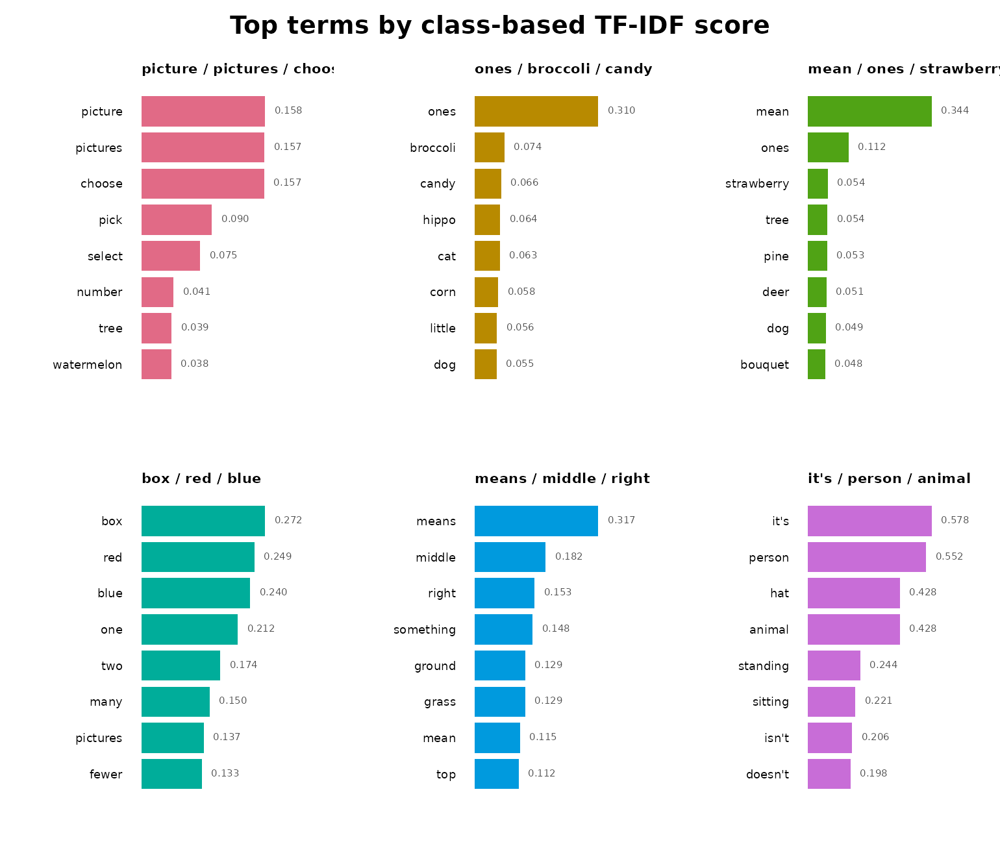
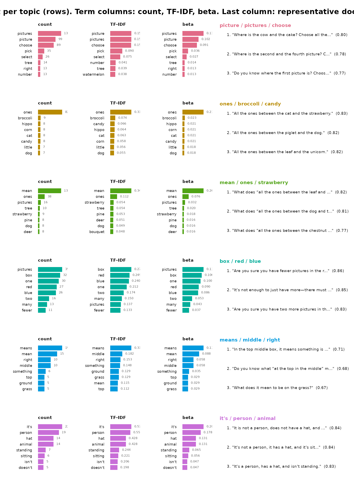
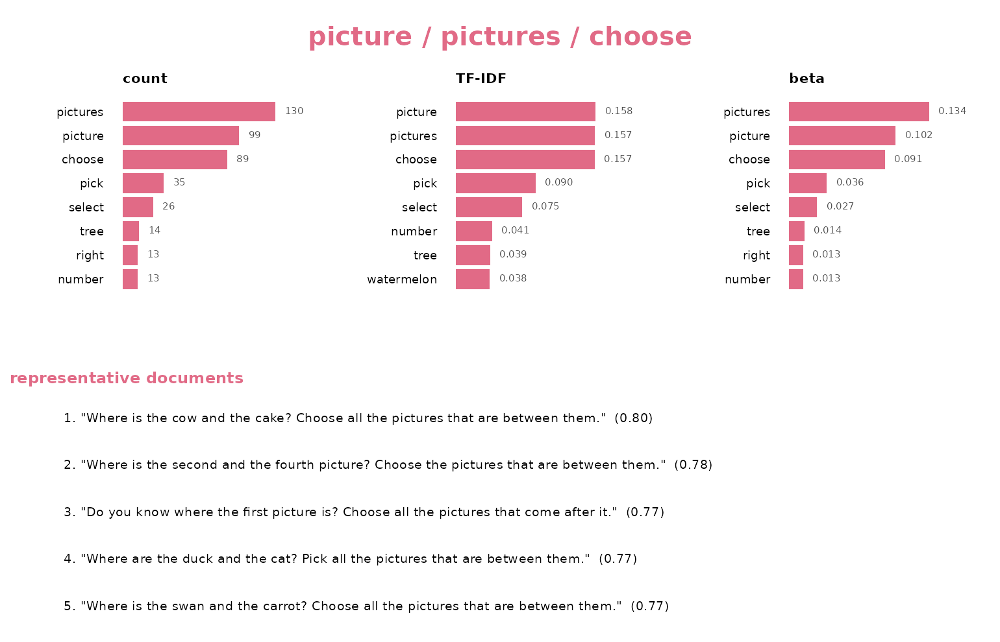

Semantic Topics in Levebee AI Mathematics Feedback
Source:vignettes/levebee_vignette.Rmd
levebee_vignette.RmdWhy this tutorial
The feedback_translations dataset bundled with
sbert contains 8,757 AI-generated feedback messages
from the Levebee mathematics application, translated into English from
ten source languages. Nobody can read nearly nine thousand messages, and
many repeat verbatim — “Try again.” is the most common, appearing 11
times — so simple frequency lists tell you about templates, not content.
Topic modeling answers the question the raw data cannot: what kind
of feedback does the system actually give, and in what
proportions?
The answer has to survive scrutiny, so every step here is deterministic: rerunning this document reproduces every number, bar, and sentence exactly. The tutorial first lets the data choose the number of topics, builds the resulting six-topic model, and then inspects it from three deliberately different angles:
- Model quality — coherence and diversity, so you know which topics to trust before interpreting any of them.
- Two keyword views per topic — raw within-topic counts (what the topic says most) against class-based TF-IDF (what the topic alone says). These are different lists by construction, and the disagreement between them is itself informative.
- Representative sentences — the centroid-nearest messages, which are the auditable evidence that a topic label means what it claims.
| Component | Verb | Question it answers |
|---|---|---|
| Topic count | select_topics() |
How many topics does the corpus support? |
| Topic model |
topics(), fitted()
|
What groups exist? |
| Model quality |
summary(), coherence()
|
Which topics are trustworthy? |
| Topic size | topic_sizes() |
How big is each topic, by distinct and reused share? |
| Frequent keywords | terms(sort_by = "beta") |
What does each topic talk about most? |
| Distinctive keywords | topic_model$terms |
What does each topic talk about that others do not? |
| Evidence | topic_model$representatives |
Do real messages support the label? |
Fourteen revision-pinned models are available; this tutorial uses the
default, all-MiniLM-L6-v2 (the field’s standard
quality-per-megabyte English embedder). The menu, with each model’s
dimension, input limit, language coverage, and download size:
models()
#> model dimensions max_tokens languages
#> 1 all-MiniLM-L6-v2 384 256 English
#> 2 all-MiniLM-L12-v2 384 128 English
#> 3 paraphrase-MiniLM-L3-v2 384 128 English
#> 4 multi-qa-MiniLM-L6-cos-v1 384 512 English
#> 5 paraphrase-multilingual-MiniLM-L12-v2 384 128 50+ languages
#> 6 all-mpnet-base-v2 768 384 English
#> 7 paraphrase-multilingual-mpnet-base-v2 768 128 50+ languages
#> 8 bge-small-en-v1.5 384 512 English
#> 9 bge-base-en-v1.5 768 512 English
#> 10 multilingual-e5-small 384 512 100+ languages
#> 11 nomic-embed-text-v1.5 768 8192 English
#> 12 jina-embeddings-v2-small-en 512 8192 English
#> 13 mxbai-embed-large-v1 1024 512 English
#> 14 potion-base-8M 256 1000000 English
#> size_mb
#> 1 90.9
#> 2 133.6
#> 3 69.5
#> 4 90.9
#> 5 479.4
#> 6 436.3
#> 7 1119.2
#> 8 133.8
#> 9 436.5
#> 10 487.4
#> 11 548.0
#> 12 130.5
#> 13 1337.6
#> 14 30.9The corpus, deduplicated
Embedding the same string twice wastes computation and — more
importantly — lets repeated templates skew the clustering geometry:
every copy of a message like “Try again.” acts as another point pulling
on the same centroid. dedupe() collapses the corpus to its
distinct non-blank messages (each kind votes once) while keeping the row
frequencies, which return as weights when sizes are reported. To keep
this tutorial fast and free of any download, it works with the first 600
distinct messages — drop the head() to model the whole
corpus:
model_download() is the one step that touches the
network. Called without arguments it fetches the package default,
all-MiniLM-L6-v2 — a 6-layer distilled English model — as
its ONNX graph (90.4 MB) and tokenizer into the local cache, locked to
one immutable Hugging Face revision and refused unless every byte
matches the SHA-256 hashes pinned inside the package, so the model you
run today is provably the model you run next year. To use a different
embedder, pass its name —
model_download("bge-small-en-v1.5"), for example — and
models() lists the other thirteen pinned options. From
there select_topics() and topics() do the
rest: under the hood they encode each distinct message — tokenized, run
through the network, mean-pooled with padding masked out, and
L2-normalized — into a 600 × 384 matrix, numerically identical to Python
SentenceTransformers output and bit-identical on every
rerun.
Choosing the number of topics
There is no universally correct number of topics, and
sbert deliberately refuses to pick one for you — the
right granularity depends on what the analysis is for. Instead
of guessing, select_topics() fits one model per candidate
count and reports the numbers that justify a choice: coherence (do a
topic’s top terms actually co-occur?), diversity (do topics own their
vocabulary or share it?), and the share of embedding variance
explained.
sweep <- select_topics(
corpus$text,
n_topics = c(4, 5, 6, 7, 8, 10, 12),
measure = "npmi",
n_representatives = 5
)
sweep#> <sbert_topic_sweep> 7 candidates, coherence measure: npmi
#> n_topics coherence topic_diversity explained
#> 4 -0.2070855 0.9250000 0.1229819
#> 5 -0.1860037 0.9400000 0.1839887
#> 6 -0.1044246 0.9166667 0.2255144
#> 7 -0.1894843 0.9142857 0.2355033
#> 8 -0.1181287 0.9000000 0.2433832
#> 10 -0.1866628 0.8600000 0.2563262
#> 12 -0.2138928 0.8151261 0.2716759
#>
#> Fitted models retained: fitted(x, n_topics = 6)
plot(sweep)
Coherence is negative throughout — these are short, template-like
messages, so any two top terms rarely land in the same short string —
but it peaks unmistakably at six and falls away on
either side, while diversity stays high and explained keeps
climbing with the count. Six is the granularity this corpus actually
supports: the point after which more topics stop buying coherence, and
(not by coincidence) about the number of feedback kinds an
editorial review can act on. fitted() pulls the
already-fitted six-topic model straight out of the sweep — no
re-encoding, no second clustering:
topic_model <- fitted(sweep, n_topics = 6)Only model_download() and the encoding inside
select_topics() are skipped here — the 600 messages’
embeddings ship precomputed — so the vignette builds with no download.
Run these lines yourself and you reproduce every number below
exactly.
topic_model
#> <sbert_topic_model>
#> documents: 600
#> topics: 6
#> model: precomputed embeddings
#> algorithm: deterministic k-means (Lloyd)
#> topic sizes: 223, 133, 131, 49, 37, 27
#> between/total SS: 22.6%Should you trust these topics?
Interpretation comes after evaluation, because a beautifully labeled topic with poor coherence is a story about noise. NPMI coherence asks whether a topic’s top terms actually co-occur in its messages (+1 = always together, −1 = never); diversity asks whether topics share their vocabulary or own it.
summary(topic_model)
#> Semantic topic model summary
#> documents: 600
#> topics: 6
#> model: precomputed embeddings
#> between/total SS: 22.6%
#> mean npmi coherence: -0.1044
#> topic topic_diversity: 0.917 (top 10 terms)
#>
#> topic label n_documents proportion coherence
#> 1 picture / pictures / choose 223 0.37167 -0.2368
#> 2 ones / broccoli / candy 133 0.22167 -0.4150
#> 3 mean / ones / strawberry 131 0.21833 -0.2564
#> 4 box / red / blue 49 0.08167 0.3011
#> 5 means / middle / right 37 0.06167 -0.2043
#> 6 it's / person / animal 27 0.04500 0.1849
coherence(topic_model, measure = "npmi")
#> topic label measure n_terms coherence
#> 1 1 picture / pictures / choose npmi 10 -0.2367956
#> 2 2 ones / broccoli / candy npmi 10 -0.4150297
#> 3 3 mean / ones / strawberry npmi 10 -0.2563526
#> 4 4 box / red / blue npmi 10 0.3010516
#> 5 5 means / middle / right npmi 10 -0.2043292
#> 6 6 it's / person / animal npmi 10 0.1849079Carry these numbers into the per-topic panels below: NPMI rewards regular, repetitive phrasing, so the most template-like topics tend to score highest, and any topic with visibly lower coherence should be read through its representative sentences rather than its keywords.
Size on two scales
The model counts distinct messages, but the application sent
some messages many times over, so editorial priority follows the
weighted share, not the distinct share. topic_sizes()
reports both scales in one call; the gap between proportion
and weighted_share measures how template-driven each topic
is — a topic whose weighted share far exceeds its distinct share is a
small repertoire of heavily reused messages.
plot(topic_model, type = "sizes")
topic_sizes(topic_model, weights = corpus$n)
#> topic label n_documents proportion n_weighted
#> 1 1 picture / pictures / choose 223 0.37166667 267
#> 2 2 ones / broccoli / candy 133 0.22166667 162
#> 3 3 mean / ones / strawberry 131 0.21833333 138
#> 4 4 box / red / blue 49 0.08166667 76
#> 5 5 means / middle / right 37 0.06166667 57
#> 6 6 it's / person / animal 27 0.04500000 40
#> weighted_share
#> 1 0.36081081
#> 2 0.21891892
#> 3 0.18648649
#> 4 0.10270270
#> 5 0.07702703
#> 6 0.05405405Two keyword views, one topic
terms(sort_by = "beta") returns the empirical
probability of each word given the topic — the generative view,
dominated by whatever the topic says most often. The class-based TF-IDF
scores in topic_model$terms are the discriminative
view: they promote words this topic uses and others do not, and demote
words that recur across many topics — frequent, but saying little about
any single one. Neither list is “the” keywords; a topic is characterized
by the pair. When the two lists agree — as they do for topic 1 below,
whose most frequent and most distinctive words are the same (“picture”,
“pictures”, “choose”) — the topic has a vocabulary of its own; when they
disagree, the counts list is telling you about the corpus and only the
TF-IDF list about the topic.
beta <- terms(topic_model, n = NULL, sort_by = "beta")
head(subset(beta, topic == 1), 8)
#> topic label term rank score frequency
#> 1 1 picture / pictures / choose pictures 1 0.15734447 130
#> 2 1 picture / pictures / choose picture 2 0.15812657 99
#> 3 1 picture / pictures / choose choose 3 0.15707789 89
#> 4 1 picture / pictures / choose pick 4 0.09026252 35
#> 5 1 picture / pictures / choose select 5 0.07513736 26
#> 6 1 picture / pictures / choose tree 6 0.03853198 14
#> 7 1 picture / pictures / choose number 7 0.04088748 13
#> 8 1 picture / pictures / choose right 8 0.03497847 13
#> beta
#> 1 0.13360740
#> 2 0.10174717
#> 3 0.09146968
#> 4 0.03597122
#> 5 0.02672148
#> 6 0.01438849
#> 7 0.01336074
#> 8 0.01336074
head(subset(topic_model$terms, topic == 1), 8)
#> topic label term rank score frequency
#> 1 1 picture / pictures / choose picture 1 0.15812657 99
#> 2 1 picture / pictures / choose pictures 2 0.15734447 130
#> 3 1 picture / pictures / choose choose 3 0.15707789 89
#> 4 1 picture / pictures / choose pick 4 0.09026252 35
#> 5 1 picture / pictures / choose select 5 0.07513736 26
#> 6 1 picture / pictures / choose number 6 0.04088748 13
#> 7 1 picture / pictures / choose tree 7 0.03853198 14
#> 8 1 picture / pictures / choose watermelon 8 0.03834595 12The topics at a glance
plot(topic_model, type = "terms") shows each topic’s
distinctive class-based TF-IDF terms, each bar annotated with its
score:
plot(topic_model, type = "terms")
type = "fit" is the whole per-topic report: all three
keyword views — raw within-topic count, class-based TF-IDF, and
generative probability (beta) — alongside the topic’s centroid-nearest
messages, one row per topic:
plot(topic_model, type = "fit", n_terms = 8, n_representatives = 3)
With per_topic = TRUE each topic becomes its own figure,
the documents stacked beneath the terms — easier to read one topic at a
time:
plot(topic_model, type = "fit", per_topic = TRUE, topics = 1)
The plot text is clipped to fit; for the full, untruncated evidence behind each topic, ask for the representatives directly:
subset(topic_model$representatives, rank <= 2)[
, c("topic", "rank", "text", "distance")
]
#> topic rank
#> 1 1 1
#> 2 1 2
#> 6 2 1
#> 7 2 2
#> 11 3 1
#> 12 3 2
#> 16 4 1
#> 17 4 2
#> 21 5 1
#> 22 5 2
#> 26 6 1
#> 27 6 2
#> text
#> 1 Where is the cow and the cake? Choose all the pictures that are between them.
#> 2 Where is the second and the fourth picture? Choose the pictures that are between them.
#> 6 All the ones between the cat and the strawberry.
#> 7 All the ones between the piglet and the dog.
#> 11 What does “all the ones between the leaf and the unicorn” mean?
#> 12 What does “all the ones between the dog and the strawberry” mean?
#> 16 Are you sure you have fewer pictures in the red box than in the blue one?
#> 17 It’s not enough to just have more—there must be exactly two more pictures in the red box than in the blue box.
#> 21 In the top middle box, it means something is in the middle at the top.
#> 22 Do you know what “at the top in the middle” means?
#> 26 It is not a person, does not have a hat, and is sitting.
#> 27 It’s not a person, it has a hat, and it’s sitting.
#> distance
#> 1 0.2023061
#> 2 0.2197193
#> 6 0.1748744
#> 7 0.1755226
#> 11 0.1835523
#> 12 0.1931901
#> 16 0.1413591
#> 17 0.1472757
#> 21 0.2878022
#> 22 0.3234709
#> 26 0.1564578
#> 27 0.1602140Where to go from here
The model built here is reusable, not just describable.
predict() assigns any new feedback message to these six
topics without refitting; topic_membership() replaces the
hard assignment with graded probabilities when a message sits between
topics; and topic_gamma() combined with
segment() shows when a single multi-sentence message spans
several feedback types. When you explore many models on the same corpus
— the sweep above, or several term settings —
topic_corpus() embeds and tokenizes the messages once and
every fit reuses that work, so the exploration costs one corpus pass
rather than one per model. For multilingual work on the source
messages (the feedback column spans ten languages), swap
one argument —
topics(corpus$text, n_topics = 6, model = "paraphrase-multilingual-MiniLM-L12-v2")
— and the rest of this document runs unchanged.